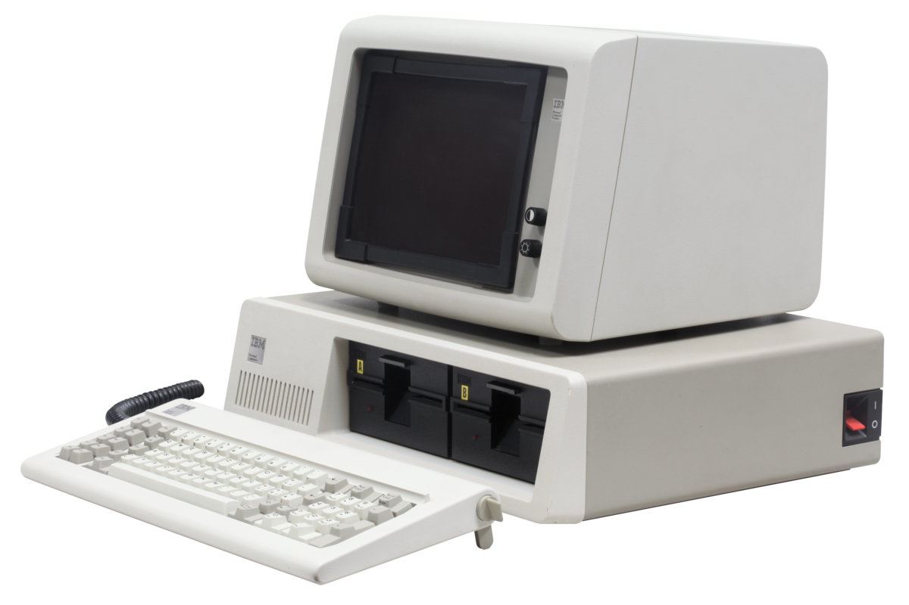

“A lot of kids growing up today aren't
told that you can be whatever you want to be. There may be obstacles, but there are no limits.”
“A lot of kids growing up today aren't
told that you can be whatever you want to be. There may be obstacles, but there are no limits.”
Mark Dean is an extremly important to the domain of Computer Science and Personal Computing. Born in Tennesse in 1957 Mark Dean went on to graduate at the top of his class from University of Tennessee in 1979. From there we went to work at IBM where he was instrumental in the creation of many important IBM technologies such as the the ISA systems bus (essential for connecting modems and printers to personal computers) and the the IBM personal computer.
Mark Dean was born in Tennesse in 1957, his father worked as a supervisor at the Tennessee Vally Authority Dam and his grandfather was a highschool principal. Growing up he was one of the few Black students at Jefferson City High School. While he was in elementary school one his friends questioned whether or not Dean was actually Black because his friend thought dean was "too smart to be Black". Dean later said, "That was the problem -- the assumption about what Blacks could do was tiled".
After highschool, Dean earned his B.S in Electrical Engineering from the University of Tennesee in 1979, soon after he went on to make history at IBM. Alongside Dennis Moeller, Mark Dean developed the Industry Standard Architecture (ISA) system bus which is used to connect peripheral devices (like printers and routers) to computers. His contributions at IBM were also instrumental in the development of the first color PC monitor. In 2000 him and a team of IB engineers created the first gigahertz chip an acomplishment that was monumental to the world of computer hardware and modern day CPUs.
Dean got his M.S in Electrical Engineering from Florida Atlantic University in 1982 and recieved his PhD in Electrical Engineering from Stanford University in 1992. In 1996 he was name an IBM fellow, the first African American to earn that title. Of the original 9 patents for the original IBM PC, Dean holds 3 of them. Dean's most recent position at IBM was as the Chief Technology Officer of the Middle East and Africa for IBM. He is currently a John Fisher Distinguished Professor at his alma matter, the University of Tennessee. His research focuses are in advanced computer architecture, data centric computing and computational science.
"If someone is blocking your ideas and advancement, find a different way to expose your proposals, innovations and request. There is often someone at the next level or an associate manager that is willing to listen. To break through, you often have to be better than the rest. This takes a lot of work, but it is achievable."